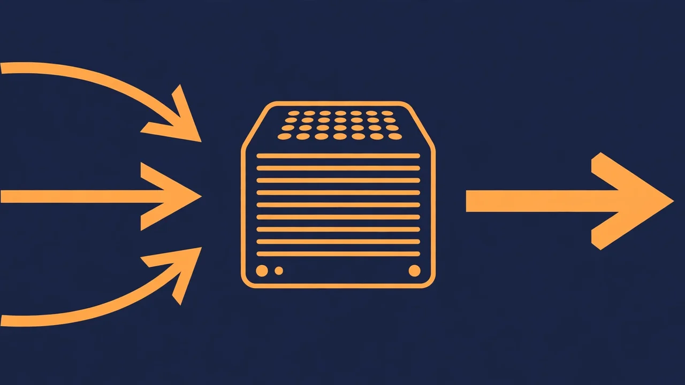

Turn any website into RAG-ready Markdown: hands-on with PageSift
Your RAG pipeline is only as good as the text you feed it, and most of the web does not arrive as text. It arrives as navigation chrome, cookie banners, scripts and layout tables — all of which become noise in an embedding. PageSift is a Rust engine built to strip that away: one binary that turns a website, a PDF or a spreadsheet into clean Markdown your models can actually use, behind APIs that drop into tools you may already run. This guide puts it to work end to end.
- What: PageSift, a Rust web-crawling and extraction engine for AI agents and LLM pipelines.
- Version and licence: 0.80.0, AGPL-3.0, with a commercial licence available.
- Project: YOLOW92/pagesift on GitHub, created 20 October 2026, 111 stars at the time of writing.
- Local server: one Docker container on port 3002, with a Firecrawl-compatible API and a Jina-style reader endpoint.
- Inputs: websites, plus PDF, HTML, Word, Excel, PowerPoint, EPUB and CSV files up to 50 MB through the parse endpoint.
- Cost: no hosted account and no per-page fee; the container runs on your own machine.

PageSift comes from a simple observation: extraction is the unglamorous half of every RAG system, and the hosted services that do it well charge per page and keep your documents on someone else's server. PageSift does the same job locally. It is written in Rust, ships as one container or binary, and speaks two APIs that existing tools already understand: Firecrawl's scrape and parse endpoints, and Jina Reader's /r/ style URLs. That compatibility is the whole trick of this guide — you do not have to rewrite your pipeline to try it; you point the client you already have at localhost instead.
What you will build in this guide is a working local extraction service: a server you can curl, a CLI you can script, a Python client you can drop into a pipeline, and an MCP server your coding agent can call. By the end you will have turned a real public page and a small crawl into Markdown files on disk, and you will know exactly where PageSift's limits are before you bet a production pipeline on it.
What you'll need
Docker for the server, plus curl and Python 3 for the clients. The CLI route needs Rust's Cargo. Nothing here needs a hosted account, a model API key, or a GPU. The example key in this guide, sk-test, is for a server on your own machine only — replace it with a real secret before you let anyone else reach port 3002.
Step 1: Start the server with Docker
One container runs the whole service, including the headless browser renderer for pages that need JavaScript. Start it in the background, with a named volume for its data:
docker run -d -p 3002:3002 -v pagesift-data:/data \
-e PAGESIFT_API_KEYS=sk-test ghcr.io/yolow92/pagesift:0.80.0The image tag pins version 0.80.0, the version this guide follows. Port 3002 is where every API in this guide lives. If the container exits immediately, check docker ps -a and docker logs for the container name Docker printed — a port already in use on 3002 is the usual culprit.
Step 2: Scrape one page two ways
First, the Jina-style reader endpoint. Put the target URL straight after /r/ and you get Markdown back, with no JSON to unwrap:
curl -s http://localhost:3002/r/https://en.wikipedia.org/wiki/Rust_(programming_language)Second, the Firecrawl-compatible route. If you already have Firecrawl client code, this is the drop-in: point it at the local server instead of the hosted API, with the same key you set on the container:
from firecrawl import FirecrawlApp
app = FirecrawlApp(api_url="http://localhost:3002", api_key="sk-test")
res = app.scrape_url("https://example.com", params={"formats": ["markdown"]})
print(res["markdown"])Try both on the same page and compare. The reader endpoint is the fastest way to eyeball a result; the Firecrawl route is the one you keep when you already have code written against that API, because nothing in the client changes except the base URL and the key.
Step 3: Crawl a small site with the CLI
For scripted work, install the standalone binary with Cargo and check the install before you crawl anything:
cargo install pagesift --locked
pagesift doctordoctor checks the install, models, data files and CPU settings, so run it first rather than debugging a crawl that was never going to start. Then scrape a single page to Markdown:
pagesift scrape "https://news.ycombinator.com" --format markdownNow a crawl. The README's example crawls docs.rs with a limit of 5000 pages; start far smaller while you learn what the output looks like, and raise the limit once you trust it:
pagesift crawl "https://docs.rs" --limit 50 --tuning-mode adaptive --out ./data/The adaptive tuning mode is the one to notice: PageSift sizes its own concurrency from the machine it runs on instead of you guessing a thread count, and its queues are bounded so memory does not grow with crawl depth. Per-host token buckets and robots.txt compliance are built in, so a polite crawl is the default, not something you have to configure — but politeness is not permission: only crawl sites whose terms allow it, and keep your limits small on other people's servers.

Step 4: Use it from Python
The Python package wraps the same engine. Install it, scrape one page, then scrape a batch:
pip install pagesiftimport pagesift
page = pagesift.scrape("https://example.com", formats=["markdown", "metadata"])
print(page.markdown)
print(page.metadata.title, page.metadata.published_date)
results = pagesift.scrape_many(
["https://example.com", "https://news.ycombinator.com"],
concurrency=8,
)Two details matter for pipelines. Extraction itself takes about 1–2 milliseconds per page at the median, network excluded, according to the project's own documentation — so if your pipeline is slow, the bottleneck is almost certainly the network or the target site, not PageSift. And batch scraping is memory-bounded by design: the concurrency parameter controls how many pages fly at once, and the engine sizes itself to the machine rather than letting a big batch eat all your RAM.
Step 5: Convert a local file
Not everything you need to index lives at a URL. PageSift 0.80.0 added a parse endpoint that accepts an uploaded file — PDF, HTML, Word, Excel, PowerPoint, EPUB or CSV, up to 50 MB — and returns the same shape of response as a scrape:
curl -s http://localhost:3002/v2/parse -H 'Authorization: Bearer sk-test' \
-F file=@report.pdf -F 'options={"formats":["markdown"]}'Replace report.pdf with your own file. The same conversion is available on the command line as pagesift scrape report.docx, which is the faster route when you are already in a terminal. The 0.80.0 release put real work into PDFs specifically: its own PDF layer reads heading levels from the document's structure tree and bookmarks first, and the project reports heading recall on its 13-PDF test set rising from 0.595 to 0.945, with false tables falling from 196 to 18. Treat those as the project's own measurements on its own test set, not as a promise about your PDFs — run your own worst document through it before you trust it with a whole archive.
Step 6: Hand it to your coding agent
PageSift also runs as a shared MCP server, bound to localhost, so every agent on the machine uses one service with one cache and one audit trail:
pagesift mcp http --port 3003 --audit-log ~/.local/state/pagesift/audit.jsonl
claude mcp add --scope user --transport http pagesift http://127.0.0.1:3003/mcpEvery fetch gets an audit line, and suspicious results get an HTML snapshot, which is the right shape for agent work: when your agent cites a page, you can check what it actually fetched. Keep this server on localhost. The MCP route is for your machine's agents, not for the open internet.
What you built
A local extraction service with four front doors: a reader URL for quick checks, a Firecrawl-compatible API for existing code, a CLI for scripts and crawls, and an MCP server for agents — all backed by the same Rust engine, all running on your machine, all producing Markdown you can feed straight into embeddings, a search index, or a notebook. A realistic next step is small: point the Python client at the ten pages your RAG demo actually needs, chunk the Markdown, and measure retrieval quality before you scale the crawl to thousands of pages.
Honest limitations
First, the licence. PageSift is AGPL-3.0, not MIT or Apache: if you run it as a network service for others, the AGPL's source-sharing obligations apply, and the project sells a commercial licence for deployments that cannot accept them. Read that before you put it behind your product's API. Second, the headline numbers need care. The project's 0.80.0 comparison tables are explicitly empty pending a final measurement run — the README says no number is written before it is measured — and the eye-catching 200-million-request, 947,611-pages-per-second figure comes from version 0.70.0 against a synthetic local origin, which the README itself says is not a real-internet speed. Third, resumable crawl checkpoints are still on the roadmap, not shipped: a killed crawl restarts from scratch. Finally, the hosted API is in closed beta and not open, so self-hosting is currently the only route — which is also the point of this guide.
Frequently asked questions
Do I need a hosted account or API key to run PageSift?
No. PageSift runs as a container or binary on your own machine; the guide uses a local key, sk-test, only for the local server, and you should replace it before sharing the server with anyone.
What can PageSift turn into Markdown?
Websites through its scrape and crawl commands, and PDF, HTML, Word, Excel, PowerPoint, EPUB and CSV files through the parse endpoint and the scrape command on a local file.
Can my coding agent use PageSift directly?
Yes. Run pagesift mcp http on port 3003 and add it to Claude Code with claude mcp add, and the agent gets the same tools with an audit line per fetch.